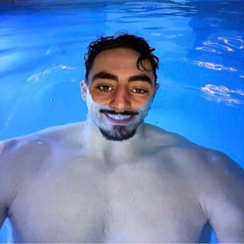

Accueil
Destinations
Explications
Contact
Connexion
S'inscrire
Explications
Le concept de "On va où?" a été créé par le Youtubeur Djilsi.

Ce Youtubeur est un créateur qui adore voyager et la plupart du temps il est accompagné ses amis : Benji, Marceau et Sacha.
Ce concept consiste donc à générer un point GPS aléatoire dans une zone choisie (France, Europe, Monde ou ce qu'on veut) et tout simplement à se rendre à ce point GPS.
L'interet de ce concept est de pouvoir voyager et faire un road-trip avec ses amis comme le font ces 4 fantastiques.